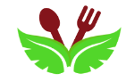
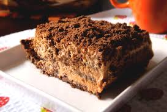
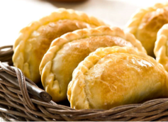
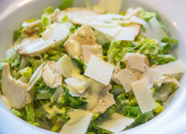
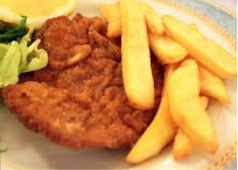
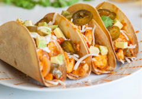
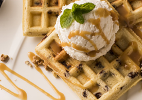

Portfolio

Recetas:
Para algunos integrantes de nuestro grupo fue algo aburrido buscar recetas pero para otros fue una tarea divertida. A pesar de que fue difícil terminarlo a tiempo, lo logramos.

Encuentro con cuarto:
Al grupo le pareció muy interesante encontrarse con los chicos de 4to. año. Ellos nos explicaron el tema "comida saludable", como por ejemplo qué es lo que puede comer un hipertenso o un vegetariano.
Encuentro con sexto:
La experiencia con los chicos de 6to. sirvió para fijar los precios que íbamos a ponerle a los menús. Gracias a ellos mejoramos el cálculo de precios y costos
Calculo de costos:
Con nuestra profesora de matemática Melina.S. empezamos a calcular los costos de los menús en tablas y en tablas de coordenadas. Aprendimos la diferencia entre proporcionalidad directa y la indirecta. Para algunos fue un poco difícil al principio y para otros no.
Video:
Hacer el video nos pareció una de las partes más divertidas del proyecto. Al hacerlo aprendimos a usar Imovie. Otra cosa que hicimos fue organizar los roles de cada participante. Después empezamos a grabar. Tardamos tiempo en finalizar, pero lo logramos.
Amigos críticos:
Con ayuda de nuestra profesora de inglés Elizabeth.C., escribimos unos mails a los alumnos de un profesor llamado Malcom, de Londres. Varios meses después nos llegaron sus respuestas. Eran muy simpáticos. Todos nos divertimos ese día.
Logo:
Hicimos el logo de colores. Es más alegre que en blanco y negro. El color bordó llama la atención y el verde nos recuerda a algo saludable. El marco es verde y negro para que sea más elegante. Las hojas son para "lo fresco", el tenedor y la cuchara son para la carne y los postres.

El Buen Comer
Panza llena corazón contento

Algunas de nuestras imágens
-
- 
- 
- 
- 
-

- 
- 
-